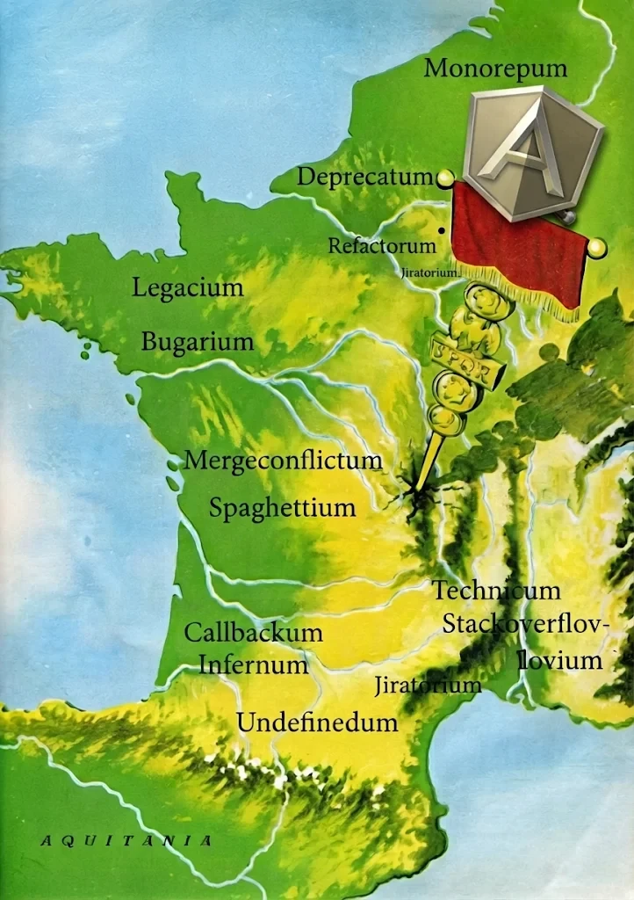
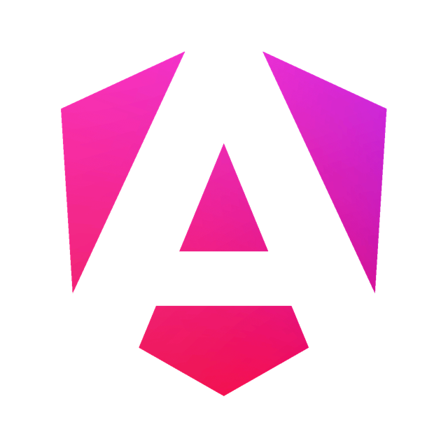
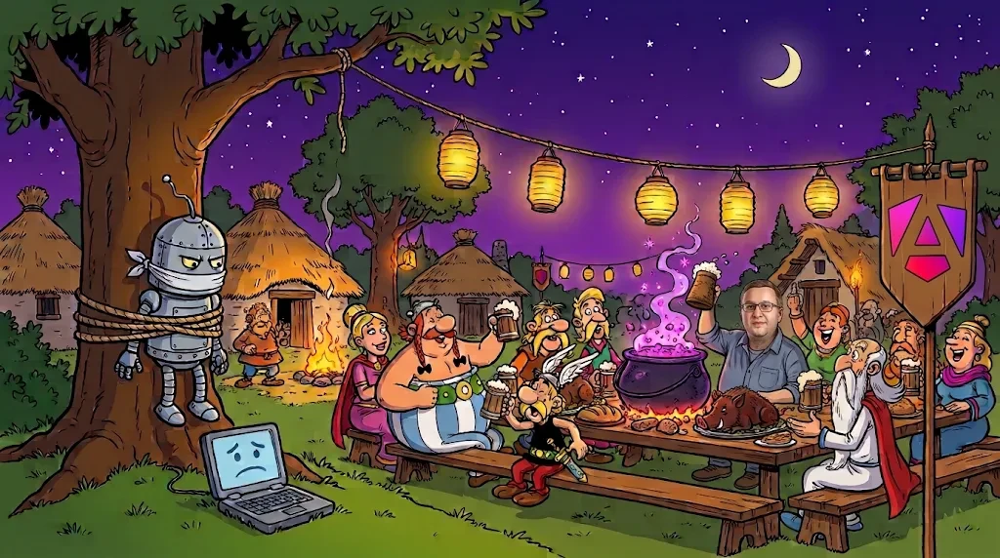

NG Poland 2026
Veni, Vidi, Compilavi
(do not ask your AI what it means 🙂)
Teaching AI agents to use the Angular compiler
Rafał Brzoska · Software Engineer

Quis loquitur? · who is talking
Rafał Brzoska
Commands legions of AI agents at Voucherify

Off duty
Fuel
The weapon
What we have · the year is 2026
One big Angular app. One mission.
Hundreds
of components
Thousands
of inputs
!
A breaking change
The mission · one shared component, one breaking change
The design system shipped app-pill v2.

Hungry Obelix
files + grep
eats a lot of tokens
disableTooltip
→
tooltip
the opposite meaning
variant
→
tone
new values
label
→
content
the text moves inside the tag
v1 <app-pill label="On" variant="success" [disableTooltip]="!on" />
v2 <app-pill tone="positive" [tooltip]="on">On</app-pill>
440
places to change
120
components
700
compiler errors

Smart Asterix
the same model
plus a magic potion
The search · the agents' own log, from a recorded run
Same task. Two ways to search.
We are looking for every <app-pill> and its old inputs: disableTooltip, variant, label
Obelix · grep
Asterix · the compiler
The search · the agents' own log, from a recorded run
Same task. Two ways to search.
We are looking for every <app-pill> and its old inputs: disableTooltip, variant, label
Obelix · grep
PROMPT Migrate every <app-pill> to v2 …
> Grep "app-pill|PillComponent"
Output too large (30.8KB)
> grep -rcE "<app-pill([ >/]|$)" src
420 ← there are 440
> grep -rhoE "<app-pill[^>]*>?" src | uniq -c
100 <app-pill label="…" variant="…" …/>
60 <app-pill ← tag split over lines
40 <app-pill … [disableTooltip]="count >
← cut at the ">"
> python3 mig.py ← his own regex program
9 commands · 10 trips to the model · 301 k tokens
Asterix · the compiler
The search · the agents' own log, from a recorded run
Same task. Two ways to search.
We are looking for every <app-pill> and its old inputs: disableTooltip, variant, label
Obelix · grep
PROMPT Migrate every <app-pill> to v2 …
> Grep "app-pill|PillComponent"
Output too large (30.8KB)
> grep -rcE "<app-pill([ >/]|$)" src
420 ← there are 440
> grep -rhoE "<app-pill[^>]*>?" src | uniq -c
100 <app-pill label="…" variant="…" …/>
60 <app-pill ← tag split over lines
40 <app-pill … [disableTooltip]="count >
← cut at the ">"
> python3 mig.py ← his own regex program
9 commands · 10 trips to the model · 301 k tokens
Asterix · the compiler
PROMPT the same + “and use ng-facts script based on Angular Compiler”
> ng-facts usages PillComponent
440 uses in 120 files (139 ms)
feature-1.component.html:3 <app-pill>
feature-1.component.html:4 <app-pill>
feature-1.component.html:5 <app-pill>
… +437 more
> ng-facts migrate spec.json --write
440 elements, 2680 edits in 170 files,
0 need a decision (163 ms)
3 commands · 4 trips to the model · 130 k tokens
The magic potion · brewed by our druids, the Angular core team
The potion: a few lines of code.
import { parseTemplate } from "@angular/compiler";
// node mini-facts.mjs app-pill disableTooltip
const [ tag, input ] = process.argv.slice(2);
for (const file of htmlFiles) {
const { nodes } = parseTemplate(read(file), file);
everyElement(nodes, element => {
if (element.name !== tag) return;
for (const binding of element.inputs) {
if (binding.name !== input) continue;
print(file, binding.sourceSpan);
}
});
}
1
The compiler reads
facts, not a regex guess
2
Only the tag and input you ask for
no wrong hits: 1 004 → 440
3
File and line, nothing more
the agent reads less and asks less
The compiler reads. The script answers. The agent decides.
Does it pay off? · the same mission, every run recorded
Same result. A smaller bill.
Obelix · files + grep
Asterix · with the potion
Strong model
Claude Sonnet · 8 runs each
$0.17–0.32
a run · right in 8 of 8
$0.06–0.09
a run · right in 8 of 8 · once $0.65
Small, cheap model
Claude Haiku · 3 runs each
1 of 3
runs right · $0.02–0.04 a run
3 of 3
runs right · about one cent a run
Your turn · the potion is already in your node_modules
Don't make your agent search.
Ask your compiler.
1
Copy 25 lines
tool/mini-facts.mjs
It works for any component and any input: they are just arguments.
2
Need another answer?
Ask your agent to add one more command to the script. Once.
3
Give it to your agent
One line in its instructions:
“Before you search, run the script.”
What you can use it for
Who uses this input? · What is dead code? · Which routes show this component? · Leaving AngularJS · NgRx → signals

The end · the banquet begins
Thank you!
These agents are crazy!
Rafał Brzoska · Voucherify
github.com/rbrzoska/ng-poland-2026
Appendix
Everything else
we measured.
60
runs recorded
One run: the same task for each agent,
each on its own fresh copy of the app,
then the judge. 107 agent sessions in all.
1
How we measured
2
The breaking change in detail
3
What if we only mention the compiler?
4
Questions and other jobs
5
The AngularJS corner
6
Limits and how to run it
How we measured · the same rules for every run
Same task, same model. One extra sentence.
1
The same task text for both
Asterix gets one more sentence:
“A deterministic migration tool built on the Angular compiler is available — describe the API change as a small JSON spec and let the tool apply every edit …”
2
A generated test app
120
components
440
<app-pill> elements
6
template styles
Plus decoys that must stay as they are.
3
The judge checks two things
The Angular compiler reports 0 errors, and every template equals the answer key, element by element.
Compared on the compiler’s AST,
so formatting does not matter.
4
Every run recorded, nothing averaged
Every number is the lowest and the highest of all runs.
$0.17–0.32 cheapest run to most expensive run
The breaking change in detail · why grep struggles
Four traps that fool a regex.
One tag, five lines. grep reads one.
<app-pill
label="Plain"
variant="warning"
[disableTooltip]="true"
/>
A > inside an expression. A regex thinks the tag ends there.
<app-pill [label]="title" [disableTooltip]="count > 3" />
Another component with a similar tag. It must stay as it is.
<app-pill-legacy label="Legacy" variant="info" [disableTooltip]="true" />
The same input name on another component. It must stay as it is.
<app-card heading="Feature 6" [disableTooltip]="true">
Three scripts, no agent · the same 440 places = 640 lines to change
0
Find and replace
of 640 lines right
220
A careful regex
of 640 lines right
640
The potion with a recipe
of 640 lines right
The breaking change in detail · the recipe Asterix wrote · Claude Sonnet
A few lines of JSON. 2 680 edits.
{ "component": "PillComponent", "inputs": {
"disableTooltip": { "rename": "tooltip", "negate": true },
"variant": { "rename": "tone",
"values": { "info": "neutral", "success": "positive",
"warning": "caution" },
"otherwise": { "pipe": "pillTone", "import": "PillTonePipe",
"from": "…/pill-tone.pipe" } },
"label": { "toContent": true }
} }
440 places
in 170 files · 80 new imports
Obelix · his own regex script
$0.17–0.32
a run · right in 8 of 8 runs
Asterix · this recipe
$0.06–0.09
a run · right in 8 of 8 · once $0.65
The agent decides. The script repeats.
The breaking change in detail · Claude Sonnet · 8 runs each
Both always correct. Asterix makes fewer trips
and writes far less.
Lowest–highest run
Obelix · files + grep
all 8 runs
Asterix · with the potion
once = he tripped over his own shell command
Runs fully correct
8 of 8
8 of 8
Trips to the model
8–17
3–6
once 28
Tokens sent
251k–652k
96k–165k
once 1 606k
Tokens written
what the model types itself
3.3k–7.8k
a run · a regex program
0.5k–1.1k
a run · a short recipe · once 11k
Cost of a run
$0.17–0.32
$0.06–0.09
once $0.65
The breaking change in detail · three sizes · Claude Sonnet
16 times the app. Almost the same bill.
Cost of a run, lowest–highest
30
components
110 places
120
components
440 places
480
components
1 760 places
Obelix
files + grep
$0.19–0.22
right in 3 of 3
$0.17–0.32
right in 8 of 8
$0.19–0.29
right in 3 of 3
Asterix
with the potion
$0.06
right in 3 of 3
$0.06–0.09
right in 8 of 8 · once $0.65
$0.07–0.17
right in 3 of 3
twice his own command hung
Both work through a script. A script does not care how many files.
What if we only mention the compiler? · Claude Sonnet
A hint is not enough. A ready script is.
The hint added to the prompt
“The Angular compiler is installed in node_modules …
write your own migration script on top of the compiler and run it.”
Plain prompt
Obelix · files + grep
$0.17–0.32
a run · right in 8 of 8
3.3k–7.8k tokens written
Prompt + the hint
Obelix · his own codemod
$0.23–0.27
a run · right in 2 of 3
8.0k–10k tokens written
Prompt + ready script
Asterix · with the potion
$0.06–0.09
a run · right in 8 of 8 · once $0.65
0.5k–1.1k tokens written · once 11k
What if we only mention the compiler? · now the exact call · Claude Sonnet
The clearer the call, the cheaper the run.
1
The recipe goes inline
no file for the agent to write
2
The format is in the prompt
no trip to ask for help first
3
The tool runs the compiler check
the answer ends with “ngc: 0 errors”
The first tool · 8 runs
$0.06–0.09 a run · once $0.65
3–6 trips to the model · once 28 · right in 8 of 8
The improved tool · 5 runs
$0.05 a run, every run
2 trips to the model · right in 5 of 5
One call
node ng-facts.mjs migrate '{ the recipe }' --root . --write
ngc: 0 errors
Questions and other jobs · six questions, no edits · Claude Sonnet
Twice, Obelix counted 60 warning pills.
There are 100.
Obelix · files + grep
3 of 5
runs with all six answers right · $0.13–0.20 a run
Asterix · with the potion
5 of 5
runs with all six answers right · $0.08–0.10 a run
“Can we delete the warning variant?”
A wrong edit makes the compiler shout. A wrong answer makes no sound.
Questions and other jobs · blast radius · Claude Sonnet · 5 runs each
The script must be able to answer the question.
The question
Which routes can show <app-tent>?
105 components · no edits, only answers
Obelix · files + grep
searches the text himself
$0.24–0.35
a run · right in 5 of 5
Asterix · the migration potion
usages lists uses, not routes
$0.19–0.28
a run · right in 4 of 5
Asterix · two new commands
where unrouted
$0.06–0.08
a run · right in 5 of 5
The wrong potion: no better than grep. The right one: under a third of the bill.
Questions and other jobs · writing labels · Claude Sonnet · 5 runs each
75 labels to write. A draw.
Give every icon button without a label a short, meaningful one. One judgement per place.
<app-icon-button icon="trash" label="Remove tent" (press)="remove()" />
Obelix · files + grep
4 of 5
runs right · $0.13–0.22 a run
=
Asterix · with the potion
4 of 5
runs right · $0.13–0.20 a run
The script gives facts and repetition. It does not judge.
The AngularJS corner · 40 old components · Claude Sonnet 5 · 3 runs each
AngularJS too: less than half the bill.
The same name, two worlds
.component("amountInput", { … })
AngularJS · still registered
selector: "amount-input"
Angular · the replacement
Six questions before migrating: what is dead, what is a leaf, what already has a twin?
Obelix · files + grep
$1.11–1.30
a run · all six answers right in 3 of 3 runs
Asterix · with the potion
$0.22–0.45
a run · all six answers right in 3 of 3 runs
The AngularJS corner · the same six questions · four models · 3 runs each
Alone, strong models pay double.
The small one gets lost.
Answers right, of six
Obelix · files + grep
Asterix · with the potion
Fable 5.1 strongest
6 of 6
$1.79–1.91 a run
5–6 of 6
$0.71–0.83 a run
Opus 5
6 of 6
$1.21–1.38 a run
6 of 6
$0.41–0.54 a run
Sonnet 5
6 of 6
$1.11–1.30 a run
6 of 6
$0.22–0.45 a run
Haiku 4.5 small
2–3 of 6
$0.63–1.03 a run
5–6 of 6
$0.13 a run
Limits and how to run it · the three scripts in the repo
Three scripts. The smallest: 25 lines of code.
mini-facts.mjs
25lines of code
The starter
Where is this input used?
It prints file and line.
You give it
<tag>
<input>
ng-facts.mjs
about630lines
The potion
Facts about an Angular app,
and edits from a recipe.
Commands
usages
where
unrouted
check
rename-input
migrate
ajs-facts.mjs
about1 500lines
The same idea
for an AngularJS + Angular app:
what is there, and what uses it.
Commands
summary
list
show
usages
Copy the idea: ask the parser, print file and line.
Limits and how to run it · read this before you quote a number
What we do not claim.
About 1 in 7
No speed claim. 16 of 107 sessions hang on the agent’s own shell command, so clock time is noise.
10× faster
Withdrawn. It was the first result, from one run. It did not happen again.
$0.65
Not always cheap. One Asterix run in eight. The other seven cost $0.06–0.09.
2 of 3
Not always right. The strongest model with the potion, on AngularJS. The small one: 1 of 3.
6 questions
Not a real product. The test apps are generated; the AngularJS questions fit what the script lists.
6 models
Not every model. Pill job: Sonnet 5.5, Haiku 5.5. AngularJS: Fable 5.1, Opus 5, Sonnet 5, Haiku 4.5.
Limits and how to run it · the repo is public · Node 22 or newer
Run it yourself: five steps.
1 · get the packages
$ npm install
2 · find & replace, regex and the compiler, side by side · free, no API key
$ npm run demo
3 · the small potion: where is this input used? · free
$ node tool/mini-facts.mjs app-pill disableTooltip fixture/src
4 · Obelix and Asterix on the mission, three runs · costs API money
$ node bench/agent.mjs --runs 3
5 · the AngularJS app and its answer key · free
$ node scripts/generate-hybrid.mjs
$ node bench/hybrid.mjs --check
Where things are
tool/
the scripts: the potion
bench/
the measurements
scripts/
the test apps are made here
results/
every recorded run